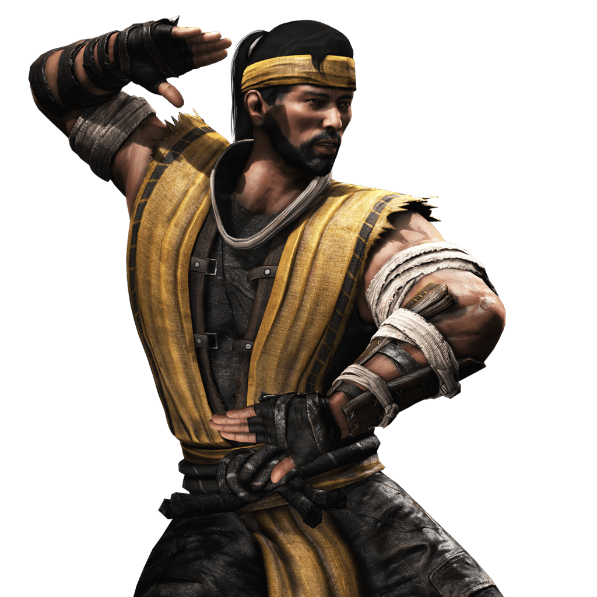
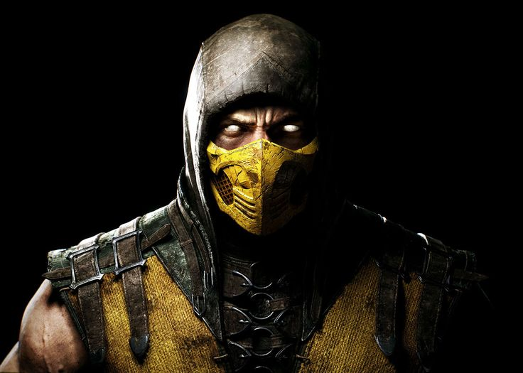
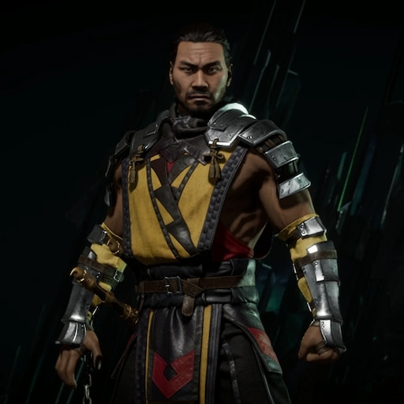

Hanzo Hazashi / Scorpion
(Mortal Kombat 9)
Hanzo Hasashi, anteriormente líder de un prestigioso clan de ninjas, los Shirai Ryu. Sufrió una tragedia devastadora
cuando su gente fue masacrada por el hechicero Quan Chi. En el momento de su muerte, Hanzo desconocía que Quan
Chi era el responsable del ataque y juró vengarse de quienes destruyeron a su clan y familia.
Renació como un demonio consumido por la sed de venganza y, paradójicamente, se alió con Quan Chi.
Este último manipuló a Hanzo, mostrándole una visión falsa en la que muestra al clan de los Lin Kuei masacrando a
su clan y sobre todo el responsable de matar a su familia a manos de su líder, Sub zero (Bi Han).
Durante el evento del torneo del Mortal Kombat, Scorpión enfrenta a Sub Zero. Este combate es intenso, ya que Scorpion
cree que fue causada por Sub-Zero. En el enfrentamiento, Scorpion logra derrotar a Sub-Zero (Bi han) y,
en un momento crucial, lo mata brutalmente ensendiendo fuego a su cuerpo, cumpliendo su venganza.
Sin embargo, más tarde se revela que Quan Chi manipuló a Scorpion para que creyera que Sub-Zero era el responsable.
Scorpion
(Mortal Kombat X)
Durante los eventos posteriores al Torneo de Mortal Kombat, Scorpion (Hanzo Hasashi) resurge como un espectro
atormentado por su pasado. Tras descubrir la verdad sobre la muerte de su clan y familia, se entera de que Quan
Chi fue el verdadero responsable, no solo de manipularlo para asesinar a Bi-Han (Sub-Zero original), sino también
de resucitar a su linaje como espectros bajo su control. En Mortal Kombat X, Hanzo, liberado del influjo de Quan Chi,
busca redención. Sin embargo, el nuevo Sub-Zero (Kuai Liang, hermano de Bi-Han) lo confronta, desconfiando de su
naturaleza violenta.
A pesar de la tensión, Scorpion lucha junto a los guerreros de la Tierra contra los revenants
de Quan Chi. En un momento crucial, Scorpion logra enfrentarse al hechicero y, tras una batalla feroz, lo decapita,
consumando su venganza definitiva.No obstante, la paz es efímera. El resurgimiento del Clan Shirai Ryu
(ahora bajo el liderazgo de Hanzo) y su alianza tensa con el Lin Kuei marcan un nuevo camino para Scorpion:
ya no como un demonio sediento de sangre, sino como un guerrero que busca honrar a los suyos y expiar sus errores.

Hanzo Hazashi
(Mortal Kombat 11)
En Mortal Kombat 11, el viaje de Scorpion alcanza su punto culminante cuando enfrenta no solo a sus
enemigos, sino a su propio pasado. El Hanzo Hasashi del presente, ahora un líder más sereno y redimido,
se ve obligado a confrontar a su yo más joven —traído al presente por Kronika—, un espectro ardiente aún
consumido por la furia y la sed de venganza contra Sub-Zero y el Lin Kuei.
El momento clave ocurre cuando el Scorpion del pasado, al ver a Kuai Liang (Sub-Zero)
aliado con su yo futuro, lo ataca creyendo que es una traición. Sin embargo, el Hanzo actual
lo detiene y, tras un intenso combate, le muestra la verdad: que su odio solo lo convirtió en
un peón de Quan Chi y que la verdadera paz solo llega cuando perdona y honra a su clan sin caer en la violencia
ciega. Al aceptar esta lección, el Scorpion del pasado renuncia a su identidad como espectro demoníaco y recupera
su humanidad, transformándose nuevamente en Hanzo Hasashi.
Este acto de redención no solo une a ambas versiones de Scorpion, sino que consolida su legado.
Al final, Hanzo (tanto el del pasado como el del presente) abraza su papel como protector del Shirai Ryu,
dejando atrás su faceta de "Scorpion" vengativo para convertirse en un guerrero honorable. Incluso forma una
alianza con Sub-Zero, sellando la paz entre sus clanes y demostrando que, más allá del fuego y la sangre,
su verdadera fuerza reside en su humanidad recuperada.

Referencias
No se
Hola
Si no es hoy, sera mañana
Mortal kombat